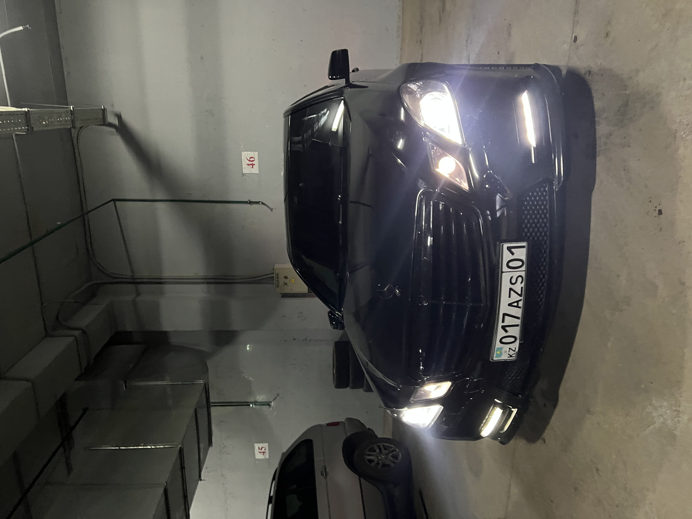

I am Kuanyshali Aldabergen, a 19-year-old chess master and self-proclaimed Counter-Strike aficionado. I have been playing chess since I was 6 years old and even have a certificate from the Chess Federation of Astana proving that I am a top-notch coach. I'm from Almaty and recently I made a big splash by buying an 11-year-old Mercedes-Benz E63 AMG. When I'm not competing in chess tournaments, you can find me at my local chess club, where I'm known for my sharp wit and hard-hitting tactics. When I'm not playing chess, I like to relax by playing Counter-Strike, a game I've been playing since its inception. When I'm not playing chess or Counter-Strike, I'm often found performing in local theater productions or enjoying nightlife with my friends. I believe I'm a living legend in Almaty, a shining example of intelligence, ambition, and drive.
- someone
Bachelor of Smart Technologies, Astana IT University, 2022 - 2025
Almaty, 2003 - 2009
Taldykorgan, 2009 - 2012
Atyrau, 2012 - 2016
Astana, 2016 - present